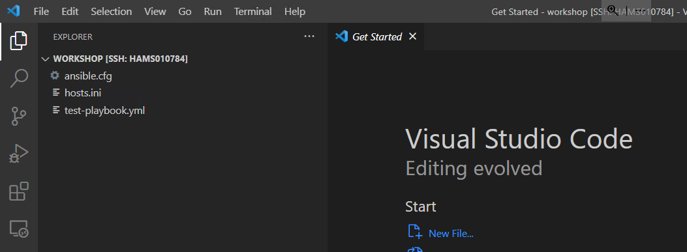
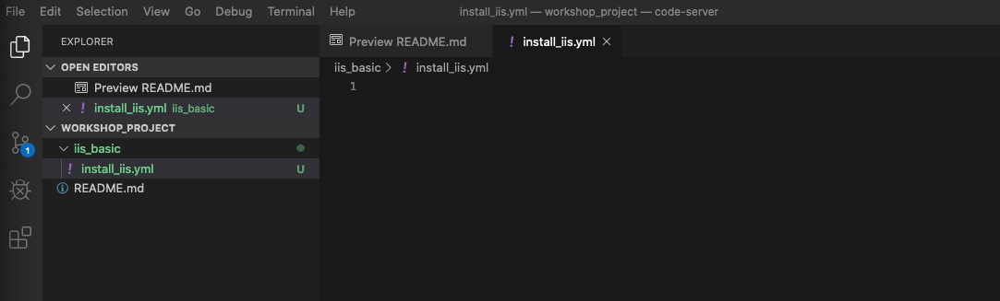
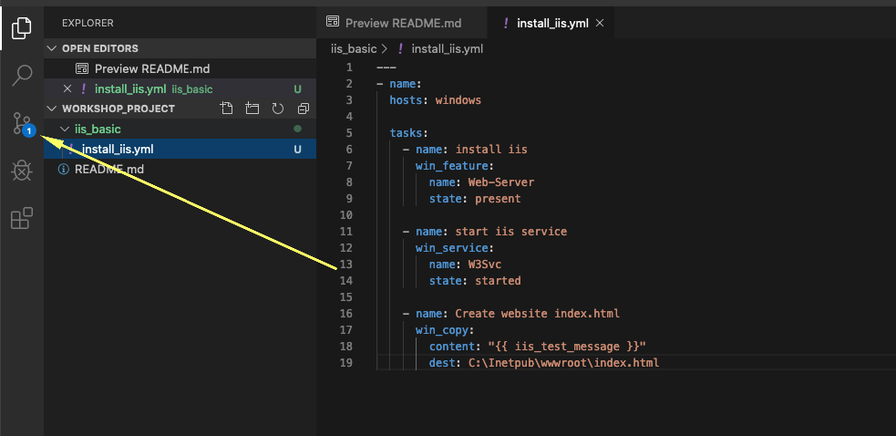
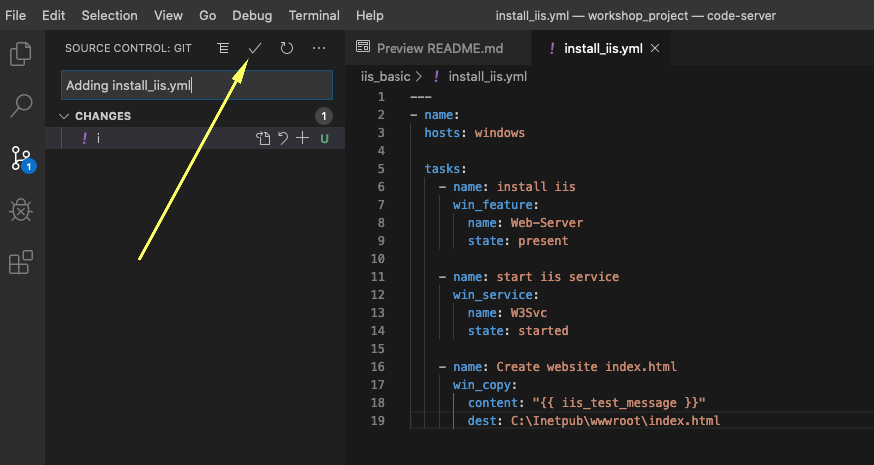
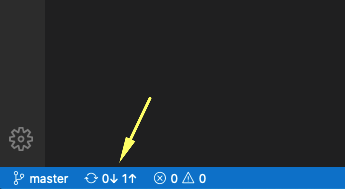

2 - Writing playbooks
Let’s get started writing our first Ansible playbook!
The playbook is where you list the steps you would like to automate into a repeatable set of plays and tasks. To begin, we will setup our directory structure for storing our playbooks. This directory structure will sync with a source control management (SCM) system to version our playbooks. We will be using git as our SCM.
A playbook can have multiple plays and a play can have one or more tasks. The goal of a play is to map a group of hosts. The goal of a task is to implement modules against those hosts.
For our first playbook, we are only going to write one play with three tasks.
All of our playbooks will be stored in a single git repository. Multiple users can use the same repository and git will manage file conflicts and versions. In this environment, each student has sole access to a private repository.
Overview
Starting at this task we are going to use Visual Studio Code as our editor. In addition, we will use Azure DevOps for source code control. This will allow us to minimize development work on the linux command line. Other editors or source code solutions can be used, but this will show the general workflow.
Step 1: Create directory structure
There is a best practice on the preferred directory structures for playbooks. We strongly encourage you to read and understand these practices as you develop your Ansible skills. That said, our playbook today is very basic and a complex directory structure is not necessary.
Instead, we are going to create a very simple directory structure for our playbook, and add just a couple of files.
Open Visual Studio Code on the remote host and select your git repository as folder.

Step 2: Create a directory called iis_basic and a file called
install_iis.yml
You can also do this with VS Code.
Hover over the WORKSHOP_PROJECT section and click the New Folder button. Create a folder called iis_basic. Then click that folder so it is
selected. Right click the new folder you’ve created and create a file called install_iis.yml.
You should now have an editor open in the right pane that can be used for creating your playbook.

Step 2: Defining your Play
Now that you are editing install_iis.yml, let’s begin by defining the play and then understanding what each line accomplishes
---Defines the beginning of YAMLname: Install the iis web serviceThis describes our playhosts: windowsDefines the host group in your inventory on which this play will run against
Step 3: Adding tasks to your Play
Now that we’ve defined your play, let’s add some tasks to get some things done. Align (vertically) the t in task with the h in hosts. Yes, it does actually matter. In fact, you should make sure all of your playbook statements are aligned in the way shown here.
You also must use spaces for indentation. Tabs are not valid YAML syntax.
If you want to see the entire playbook for reference, skip to the bottom of this exercise.
tasks:
- name: Install iis
ansible.windows.win_feature:
name: Web-Server
state: present
- name: Start iis service
ansible.windows.win_service:
name: W3Svc
state: started
- name: Create website index.html
ansible.windows.win_copy:
content: "{{ iis_test_message }}"
dest: C:\Inetpub\wwwroot\index.html
- name: Show website address
ansible.builtin.debug:
msg: "Open an RDP session and open http://{{ ansible_host }} in a browser."
tasks:This denotes that one or more tasks are about to be defined- name:Each task requires a name which will print to standard output when you run your playbook. Therefore, give your tasks a name that is short, sweet, and to the point.
Additional info regarding the name parameter
The name key is optional, still, it is highly advisable to use it, as this is the output you will be getting when executing the playbook.
When ommiting the name parameter, your playbook only will output that it does something with the ansible.windows.win_feature module, but not what it does exactly.
These three lines are calling the Ansible module win_feature to install the IIS Web Server. Click here to see all options for the win_feature module.
The next few lines are using the ansible module win_service to start the IIS service. The win_service module is the preferred way of controlling services on remote hosts. Click here to learn more about the win_service module.
In this task, we use the win_copy module to create a file with specific contents in it. We are getting a little more complex here as we are using a variable to source the contents. We won’t go into the variables just yet, since they will be showcased in a later lesson.
This task uses the debug module to post a message at the end of playbook execution.
Try to run your playbook! Execute the following command:
Warning
At the moment your playbook will not run properly. There is an undefined Variable. We will solve this problem in AAP!
Step 4: Saving your Playbook
Now that you’ve completed writing your playbook, it would be a shame not to keep it. Click File Save from the menu.
And that should do it. You should now have a fully written playbook called install_iis.yml.
But wait!!! We haven’t committed our changes from our local copy to the remote git server.
Add the file (to the local staging area).
Or if you already in the created folder just the filename
Commit the change with a short message.
This message is intended to describe the changes you made so that others (including yourself) better understand what is changing when comparing versions.
Now you need to push the committed changes to your repository.
Click the Source Code icon as shown below (It is the middle on the far left of the page that has the blue circle with # 1 in it)

Type in a commit message such as Adding install_iis.yml in the text box at the top of the sidebar. Click the check box above to commit. This message is intended to describe the changes you made so that others (including yourself) better understand what is changing when comparing versions.

Now you need to push the committed changes to your repository.
On the bottom left blue bar, click the section that contains the circular arrows to push the changes.

This may take as long as 30 seconds to push. After your first push, you may get a pop-up message asking if you would like to periodically run git fetch. Because you’re the only one working on the git repo, you can click Yes or No.

If you’re interested in validating the code is in git, you can connect to Azure DevOps to verify.
You are ready to automate!
Note
Ansible (well, YAML really) can be a bit particular about formatting especially around indentation/spacing. The Ansible documentation has describe the YAML Syntax a bit more and it will save you some headaches later.
In the meantime, your completed playbook should look like this. Take note of the spacing and alignment.
---
- name: Install the iis web service
hosts: windows
tasks:
- name: Install iis
ansible.windows.win_feature:
name: Web-Server
state: present
- name: Start iis service
ansible.windows.win_service:
name: W3Svc
state: started
- name: Create website index.html
ansible.windows.win_copy:
content: "{{ iis_test_message }}"
dest: C:\Inetpub\wwwroot\index.html
- name: Show website address
ansible.builtin.debug:
msg: "Open an RDP session and open http://{{ ansible_host }} in a browser."